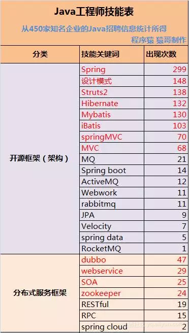
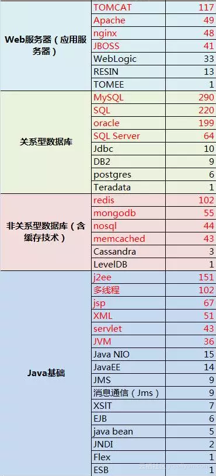
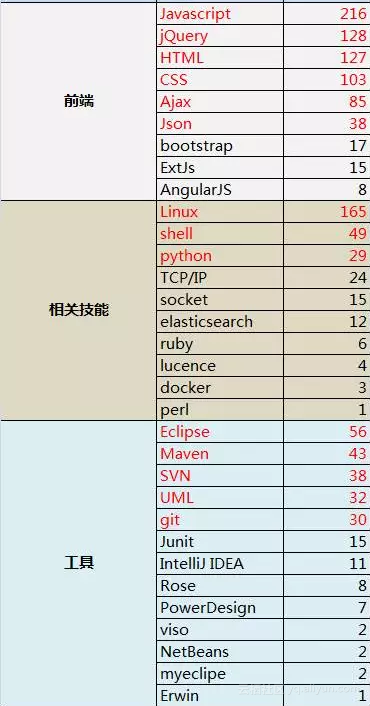
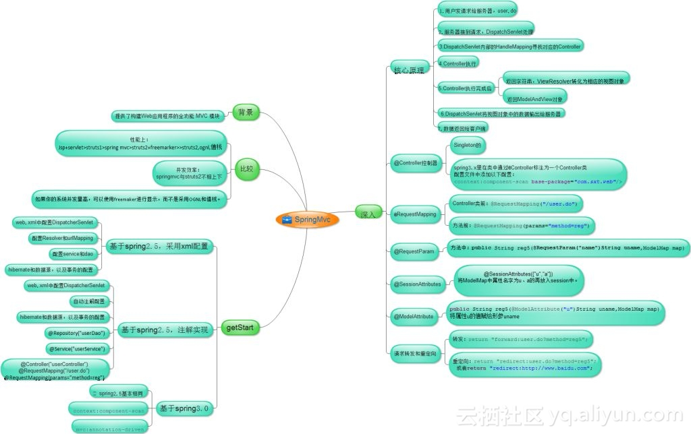
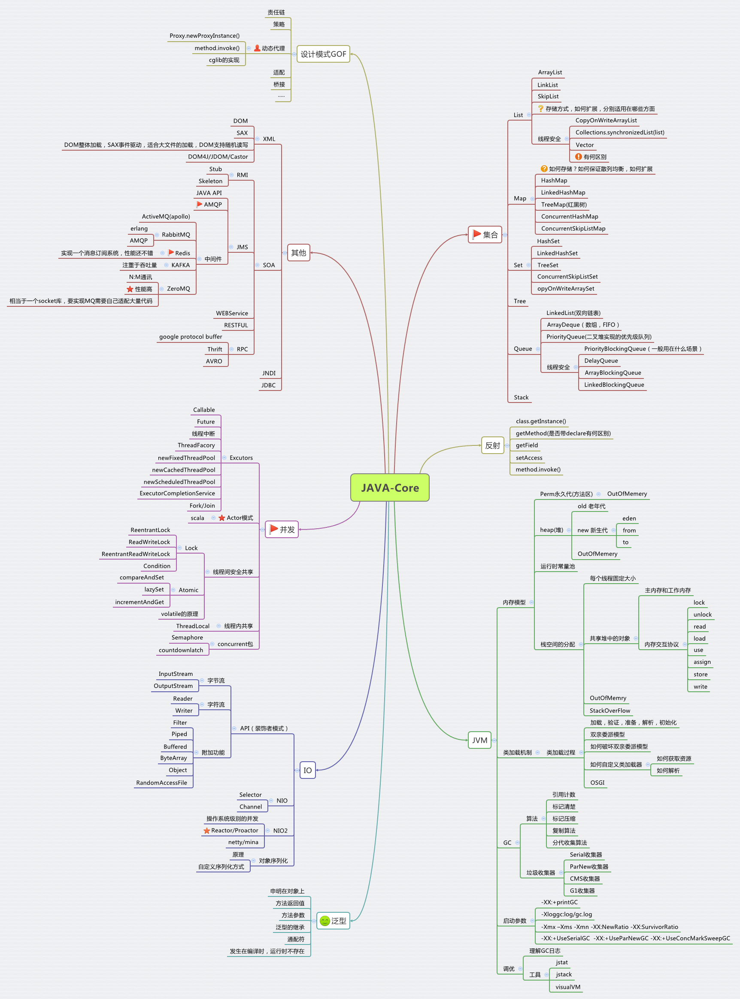
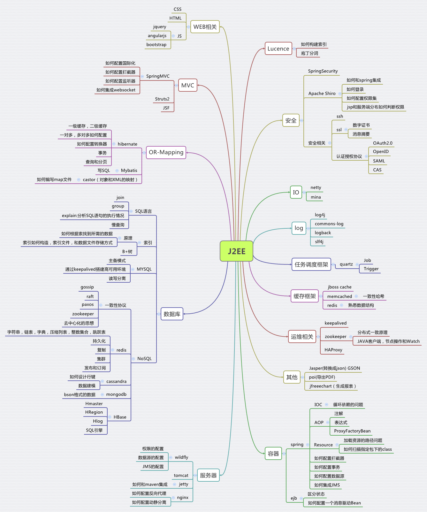
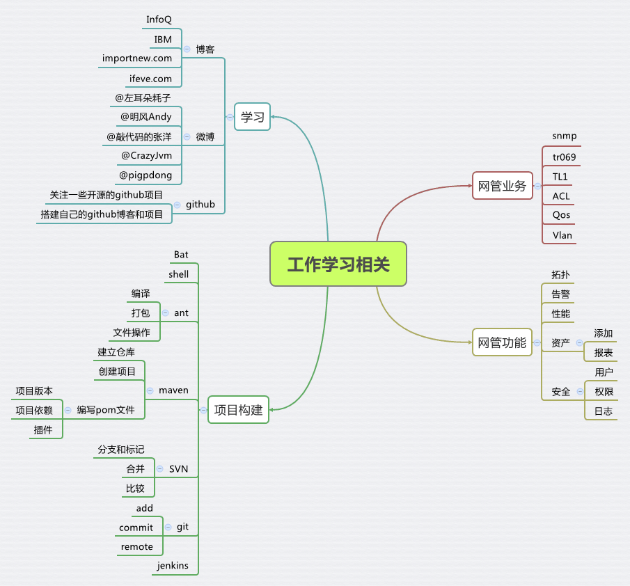
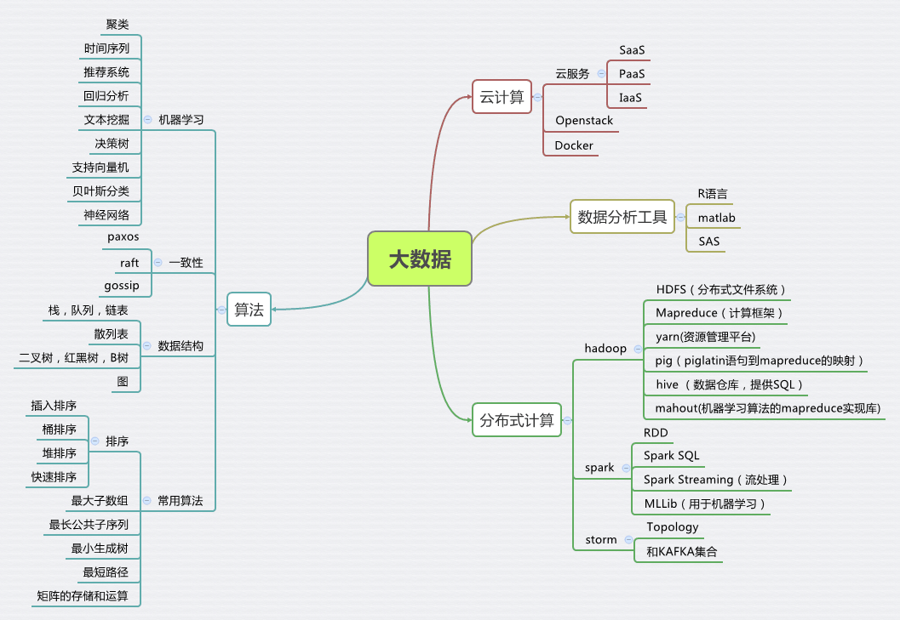
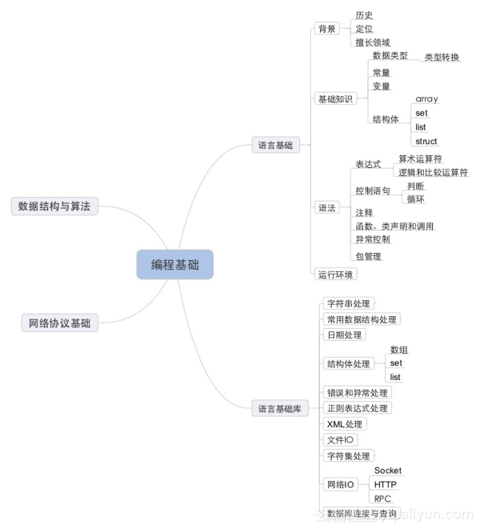

【战略收藏】Java知识体系
先看看这些程序员技能树，你掌握或了解哪些？OMG竟然有么多～～～震精！震精！！！



这是从450家企业的招聘信息中统计而来，相对来说还是比较真实的，虽然有些公司的招聘要求万年不变，但还是可以大致反应企业的招聘要求的。
尽管Struts2漏洞频出，但是由于政府、银行以及传统企业遗留项目大部分还是采用Struts2的，所以还是占有一定市场，但绝壁不会增长。新兴互联网公司，一般来说主要是Spring家族居多，spring、spring Mvc以及Spring Boot 出现的频率较多。
从图中可以看出，分布式服务框架应用也是大部分企业招聘的必要条件了，阿里系的Dubbo名列前茅。相应的分布式应用程序协调服Zookeeper也出现在其中。
时下很流行的RESTful架构，准确的来说它是一种标准。也是很多企业考察的对象。
以下是出现次数超过100的一些技能，大家可以做一个参考。
Spring 299
MySQL 290
JavaScript 216
Linux 165
J2EE 151
设计模式 148
Struts2 138
Hibernate 132
Mybatis 130
jQuery 128
HTML 127
TOMCAT 117
iBatis 103
CSS 103
redis 102
多线程 102
dubbo 47 （绝壁不是打酱油的）
相信每个程序员、或者说每个工作者都应该有自己的职业规划，问一下自己对编程到底持有的是一种什么样的态度，是够用就好呢还是不断研究？
Spring 框架

JAVA核心技术总结

J2EE技术总结

工作和学习总结

大数据相关技术总结

社区昵称 happycc 的精彩回答：
正在使用的
Spring框架
Spring框架是一个分层架构,有7个定义良好的模块组成
spring模块构建在核心容器智之上, 核心容器定义了创建、 配置、和管理bean的方式
组成spring框架的每个模块(或组件)都可以单独存在, 或者与其他一个或多个模块联合实现
模块如下:
1–核心容器
核心容器提供spring框架的基本功能,核心容器的主要组件是BeanFactory, 他是工厂模式的实现.
BeanFactory使用控制反转(IOC)模式将应用程序的配置和依赖性与实际的应用程序代码分开
2–Spring上下文
是一个配置文件,该配置文件向spring框架提供上下文信息
3–Spring AOP
通过配置管理特性,Spring AOP 模块直接将面向切面(方面)编程功能集成到spring框架中
4–spring DAO
JDBC DAO抽象层提供了有意义的已成层次结构, 可用该结构管理异常处理和不同数据库抛出的错误信息,极大的降低了异常代码数量
5–Spring ORM
spring框架插入了若干个ORM框架, 从而提供了ORM的对象工具,其中包括了Hibernate, Mybatis
6–Spring Web
web上下文模块建立在应用程序上下文模块之上,为基于web的应用程序提供上下文
7–Spring MVC
该框架是一个全功能的构建web应用程序的MVC实现. 通过策略接口,MVC框架变成高度可配置的. MVC容纳了大量视图技术. 其中包括JSP、Velocity和POI
Spring 框架的好处
spring是最大的工厂
spring负责业务逻辑组件的框架和生成, 并管理业务逻辑组件的生命周期
spring可以生产所有实例, 从控制器、 业务逻辑组件、 持久层组件
Spring特点
1–降低了组件之间的耦合性, 实现了软件各个层之间的解耦
2–可以使用spring容器提供的服务, 如: 事务管理, 消息服务
3–容器提供单例模式支持
4–容器提供AOP技术, 利用它很容易实现权限拦截, 运行期监控
5–容器提供了众多的辅助类, 能加快应用的开发(org.springframework.jdbc.core.JDBCTemplate 等)
6–spring对主流的应用框架提供了集成支持, 例如: hibernate,JPA, Struts, Mybatis(IBatis)
7–Spring属于低侵入式设计, 代码污染度极低
8–独立于各种应用服务器
9–spring的DI机制降低了业务对象替换的复杂性
10–spring的高度开发性, 并不强制应用完全依赖于spring, 开发者可以自由选择spring的部分或者全部
社区昵称 小崽崽 的精彩回答：
PHP才是世界上最好的语言，看我大PHP技能树
